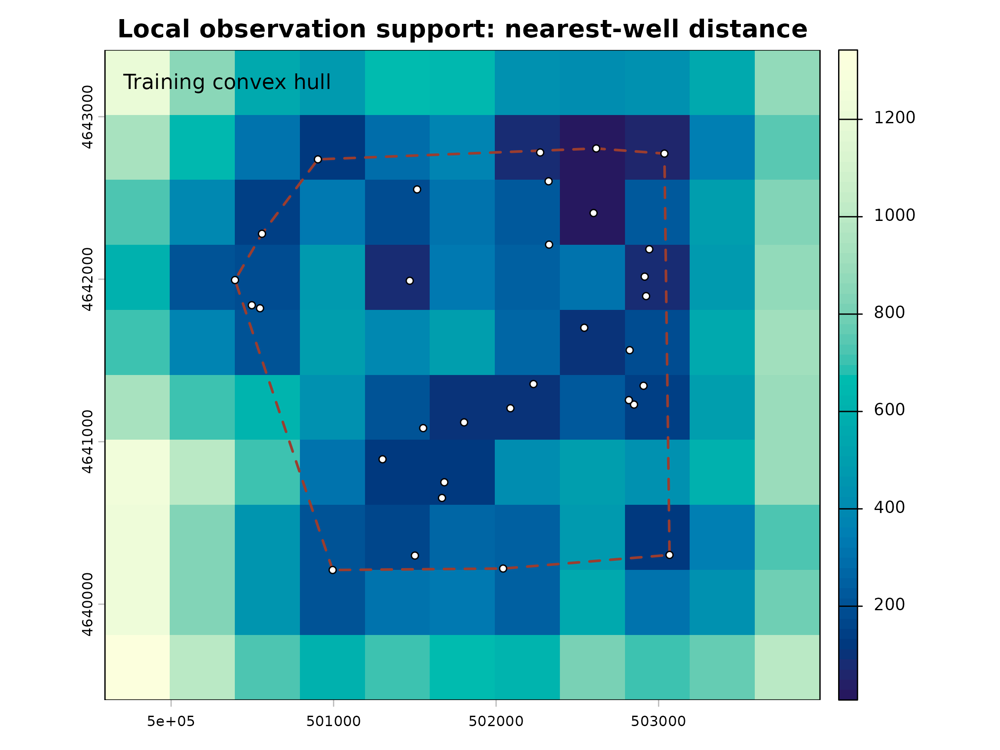

Interpolation diagnostics and prediction support
diagnostics-and-support.RmdDifferent interpolation methods express different assumptions. potentiomap retains available fit information and upstream condition text so those assumptions can be reviewed.
library(potentiomap)
data("synthetic_wells")
points <- ps_make_points(
synthetic_wells, "x", "y", "gw_elevation", "well_id", "EPSG:26916"
)
result <- suppressWarnings(ps_interpolate(
points, methods = c("IDW", "TPS", "OK", "UK"), grid_res = 400,
return = "result", support = TRUE, support_max_distance = 1000
))
summary(result)
#> potentiomap interpolation summary
#> observations: 32
#> methods: IDW, TPS, OK, UK
#> minimum maximum
#> IDW 164.2422 170.7040
#> TPS 161.4859 174.6270
#> OK 163.8829 171.5570
#> UK 160.1756 172.2497
#> captured conditions: 9
result$conditions
#> method type class
#> 1 IDW message simpleMessage
#> 2 TPS warning potentiomap_tps_gcv_boundary_warning
#> 3 TPS message simpleMessage
#> 4 TPS message simpleMessage
#> 5 TPS message simpleMessage
#> 6 TPS message simpleMessage
#> 7 OK warning potentiomap_kriging_convergence_warning
#> 8 OK message simpleMessage
#> 9 UK message simpleMessage
#> text
#> 1 [inverse distance weighted interpolation]
#> 2 TPS GCV selected lambda 1.81248e-05 at a search boundary; inspect sensitivity and prediction support.
#> 3 Warning:
#> 4 Grid searches over lambda (nugget and sill variances) with minima at the endpoints:
#> 5 (GCV) Generalized Cross-Validation
#> 6 minimum at right endpoint lambda = 1.812476e-05 (eff. df= 30.40003 )
#> 7 No convergence after 200 iterations: try different initial values?
#> 8 [using ordinary kriging]
#> 9 [using universal kriging]IDW records its power and neighbor limit. When TPS selects its smoothing parameter, supported generalized-cross-validation information is retained. Ordinary and universal kriging retain empirical and fitted variogram objects, their fitted parameters, and method-attributed conditions.
ps_diagnostics(result, "TPS")[c(
"selection_mode", "selected_lambda", "effective_degrees_of_freedom",
"selected_at_search_boundary", "return_status"
)]
#> $selection_mode
#> [1] "GCV"
#>
#> $selected_lambda
#> [1] 1.812476e-05
#>
#> $effective_degrees_of_freedom
#> [1] 30.40003
#>
#> $selected_at_search_boundary
#> [1] TRUE
#>
#> $return_status
#> [1] "success_with_warning"
ps_diagnostics(result, "UK")[c(
"coordinate_scaling", "model_matrix_rank", "condition_number",
"observed_range", "predicted_range",
"predicted_range_to_observed_range_ratio", "return_status"
)]
#> $coordinate_scaling
#> [1] "center_scale"
#>
#> $model_matrix_rank
#> [1] 6
#>
#> $condition_number
#> [1] 4.383233
#>
#> $observed_range
#> [1] 7.38
#>
#> $predicted_range
#> [1] 12.07408
#>
#> $predicted_range_to_observed_range_ratio
#> [1] 1.636054
#>
#> $return_status
#> [1] "success"Quadratic-drift UK centers and scales coordinates by default. The condition number, prediction-range ratio, and overshoot thresholds are heuristic review flags, not formal acceptance tests. A warning does not automatically discard a surface. Rank deficiency or nonfinite model components can make the requested fit impossible, in which case the function returns a classed error rather than another interpolation method.
knitr::kable(result$support$summary)| support_class | cells | percent |
|---|---|---|
| supported | 48 | 43.636364 |
| outside_training_hull | 54 | 49.090909 |
| beyond_maximum_distance | 0 | 0.000000 |
| outside_mask | 0 | 0.000000 |
| prediction_unavailable | 0 | 0.000000 |
| multiple_limitations | 8 | 7.272727 |
head(result$support$records)
#> cell inside_training_hull nearest_observation_distance
#> 1 1 FALSE 1205.6344
#> 2 2 FALSE 853.3371
#> 3 3 FALSE 565.6149
#> 4 4 FALSE 481.3068
#> 5 5 FALSE 668.8667
#> 6 6 FALSE 643.4787
#> within_maximum_distance inside_mask finite_prediction support_class
#> 1 FALSE TRUE TRUE multiple_limitations
#> 2 TRUE TRUE TRUE outside_training_hull
#> 3 TRUE TRUE TRUE outside_training_hull
#> 4 TRUE TRUE TRUE outside_training_hull
#> 5 TRUE TRUE TRUE outside_training_hull
#> 6 TRUE TRUE TRUE outside_training_hull
#> support_reason
#> 1 outside_training_hull;beyond_maximum_distance
#> 2 outside_training_hull
#> 3 outside_training_hull
#> 4 outside_training_hull
#> 5 outside_training_hull
#> 6 outside_training_hull
distance <- result$support$rasters[["nearest_observation_distance"]]
par(bg = "white")
terra::plot(
distance, col = hcl.colors(64, "YlGnBu"),
main = "Local observation support: nearest-well distance"
)
terra::plot(
terra::convHull(points), add = TRUE, border = "#9b3d2f",
lwd = 2, lty = 2
)
terra::plot(points, add = TRUE, pch = 21, bg = "white", cex = 0.75)
legend(
"topleft", legend = "Training convex hull", lty = 2, lwd = 2,
col = "#9b3d2f", bty = "n"
)
The convex hull is a description of the training network, not an aquifer boundary. Nearest-observation distances require projected coordinates by default because longitude and latitude degrees are not linear ground-distance units. Predictions are classified rather than automatically blanked.
The same support rasters can classify sections of modeled contours. Criteria are supplied explicitly rather than inferred from universal distances.
contours <- ps_contours(result$surfaces$IDW, interval = 1)
classified <- suppressWarnings(ps_contour_support(
contours, support = result$support,
supported_distance = 500, approximate_distance = 1200
))
knitr::kable(classified$summary)| contour_level | support_class | segment_count | total_line_length | retained_line_length | removed_line_length | |
|---|---|---|---|---|---|---|
| 7 | 165 | supported | 1 | 1316.53639 | 1316.53639 | 0 |
| 1 | 165 | approximate | 1 | 20.88435 | 20.88435 | 0 |
| 8 | 166 | supported | 1 | 1805.69040 | 1805.69040 | 0 |
| 2 | 166 | approximate | 2 | 1876.34622 | 1876.34622 | 0 |
| 9 | 167 | supported | 1 | 2979.87771 | 2979.87771 | 0 |
| 3 | 167 | approximate | 1 | 871.59269 | 871.59269 | 0 |
| 10 | 168 | supported | 1 | 3091.10331 | 3091.10331 | 0 |
| 4 | 168 | approximate | 2 | 874.56085 | 874.56085 | 0 |
| 11 | 169 | supported | 1 | 3342.05486 | 3342.05486 | 0 |
| 5 | 169 | approximate | 2 | 1511.22085 | 1511.22085 | 0 |
| 13 | 169 | unsupported | 1 | 200.32308 | 200.32308 | 0 |
| 12 | 170 | supported | 1 | 2536.95768 | 2536.95768 | 0 |
| 6 | 170 | approximate | 3 | 3191.34715 | 3191.34715 | 0 |
See the contour-support threshold comparison for maps showing how tighter, broader, and network-relative distance criteria change the same contour lines.
Distance-derived contour classes describe local observation support. They are not statistical confidence intervals. An identified uncertainty raster can be used as a separate criterion, but its meaning and units must be supplied and it is not silently resampled or treated as interchangeable with distance.